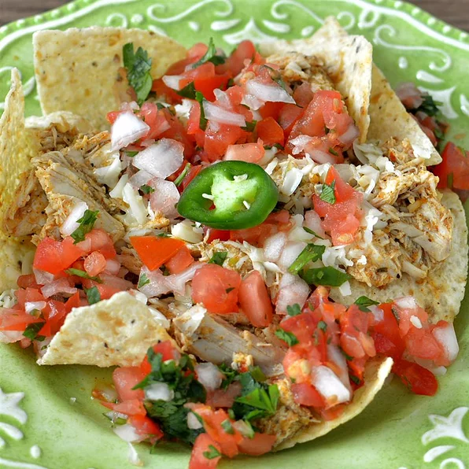

Nachos Recipe

Description
Ingredients
- 3 tablespoons butter, divided
- ¼ cup chopped onion
- 1 jalapeno pepper, seeded and chopped
- 1 chile pepper, seeded and chopped
- 2 cloves garlic, chopped
- ½ cup chicken broth
- 1 skinless, boneless chicken breast half, cubed
- ¼ teaspoon chili powder
- ¼ teaspoon seasoned salt
- ¼ teaspoon ground cumin
- ⅛ teaspoon cayenne pepper
- 1 tablespoon all-purpose flour
- 2 tablespoons sour cream
- ½ cup shredded pepperjack cheese
- 2 cups tortilla chips, or to taste
- 2 tablespoons pico de gallo, or to taste (Optional)
Steps
- Melt 2 tablespoons butter in a skillet over medium-high heat; saute onion, jalapeno pepper, chile pepper, and garlic until fragrant and lightly browned, about 3 minutes. Add chicken broth, chicken, chili powder, seasoned salt, cumin, and cayenne pepper; cook and stir until chicken is no longer pink in the center about 5 minutes.
- Melt 1 tablespoon butter in a microwave-safe bowl in the microwave, 15 to 20 seconds. Stir flour into melted butter until smooth.
- Mix flour-butter mixture and sour cream into chicken mixture; cook and stir until sauce is thickened, 2 to 4 minutes. Add pepperjack cheese to sauce and stir until melted, 2 to 3 minutes.
- Spread chips onto a serving platter; top with sauce and pico de gallo.